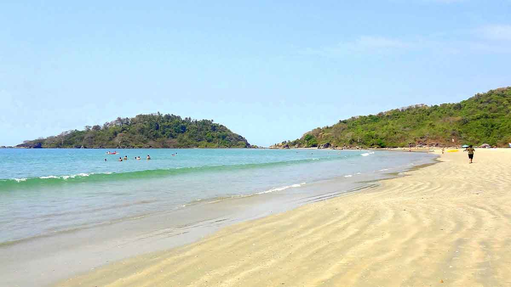

GOA Located on the South Konkan coast of western India, approximately 250 miles (402 km) south of Mumbai, Goa is bounded by Maharashtra in the north, Karnataka in the east and south, and the Arabian Sea on the west. Before it attained statehood on 30 May 1987, Goa was a union territory. Its area of 1,429 square miles (population 1,343,998; 2001 census) makes it the smallest of the twenty-eight states of the Indian union. In 2003 it was judged the richest state in India by the magazine India Today, and had the highest rate of literacy at 82.3 percent. It is one of the most popular tourist destinations for domestic as well as international tourists. Despite intensive exploitation of iron and manganese ore as well as general industrialization since 1961, the state has retained its famed natural beauty, thanks to successive environmentally conscious governments.